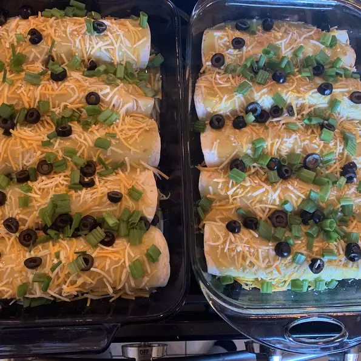

Green Chicken Enchilada

Description
Very easy to make! Chicken and Monterey Jack Cheese filled flour tortillas topped with green enchilada sauce. I make Mexican Rice to serve on the side.
Ingredients
- 1 pound skinless, bonless chicken breast halves
- 12 (10 inch) flour tortillas
- 1 (8 ounce) package shredded Monterey Jack cheese
- 1 (19 ounce) can green enchilada sauce
Steps
- In a pot with enough water to cover, boil the chicken 25 minutes, or until juices run clear. Drain, cool, and shred.
- Preheat oven to 350 degrees F (175 degrees C). Lightly grease a medium baking dish.
- Fill each tortilla with equal amounts of chicken and cheese, reserving 1/4 cup cheese for topping. Roll tortillas to form enchiladas. Arrange enchilas in the prepared baking dish. Cover with the enchilada sauce.
- Bake enchiladas 30 minutes in the preheated oven. Top with reserved cheese, and continue baking 5 minutes, unitl cheese is melted.